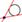

GeoGebra ofrece un comando para la tangente a una función f(x) en x=a. Basta ingresar las siguientes líneas como entradas en el campo de texto (pulsando Enter al finalizar cada línea):
a = 3
f(x) = 2 sin(x)
t = Tangente[a, f]
Al animar el número a (ver Animación) la tangente se desplaza por el gráfico de la función f.
Otro modo de establecer la tangente a una función f en un punto T, podría ser.
a = 3
f(x) = 2 sin(x)
T = (a, f(a))
t: X = T + s (1, f'(a))
Esto muestra al punto T en el gráfico de f expresando la tangente t paramétricamente.
Incluso, también podemos trazar la tangente de una función, geométricamente:
·
Elegimos el modo  Nuevo Punto
y damos clic en el gráfico de la función f para determinar allí
a, digamos A, como punto de f.
Nuevo Punto
y damos clic en el gráfico de la función f para determinar allí
a, digamos A, como punto de f.
· Elegimos el modo  Tangentes y damos clic en la función f y luego en el punto recientemente creado, digamos A.
Ahora, hay que elegir el modo  Desplaza
y arrastrar tal punto a lo largo de la función con el mouse. La tangente
de f en A, como puede observarse, también se modifica
dinámicamente, en correspondencia.
Desplaza
y arrastrar tal punto a lo largo de la función con el mouse. La tangente
de f en A, como puede observarse, también se modifica
dinámicamente, en correspondencia.
Related Topics